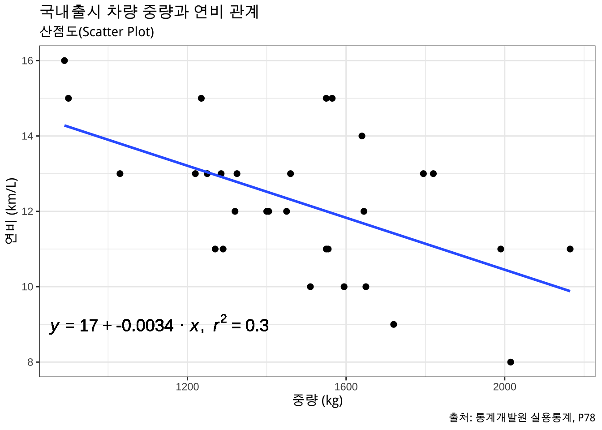

cars.Rmdcars
국내 출시된 30종 차량 정보를 바탕으로 중량(kg)과 연비(km/L) 관계를 파악한다.
| 중량 | 연비 |
|---|---|
| 1795 | 13 |
| 1550 | 11 |
| 1235 | 15 |
| 1460 | 13 |
| 1820 | 13 |
| 2015 | 8 |
| 1220 | 13 |
| 1595 | 10 |
| 1450 | 12 |
| 1565 | 15 |
| 1325 | 13 |
| 890 | 16 |
| 1270 | 11 |
| 1640 | 14 |
| 1510 | 10 |
| 2165 | 11 |
| 1555 | 11 |
| 1320 | 12 |
| 1650 | 10 |
| 1405 | 12 |
| 1285 | 13 |
| 1550 | 15 |
| 1645 | 12 |
| 1990 | 11 |
| 1400 | 12 |
| 900 | 15 |
| 1030 | 13 |
| 1250 | 13 |
| 1720 | 9 |
| 1290 | 11 |
국내출시 차량 중량과 연비관계를 시각화한다.
# https://stackoverflow.com/questions/7549694/add-regression-line-equation-and-r2-on-graph
lm_eqn <- function(df){
m <- lm(연비 ~ 중량, df);
eq <- substitute(italic(y) == a + b %.% italic(x)*","~~italic(r)^2~"="~r2,
list(a = format(unname(coef(m)[1]), digits = 2),
b = format(unname(coef(m)[2]), digits = 2),
r2 = format(summary(m)$r.squared, digits = 3)))
as.character(as.expression(eq));
}
cars %>%
ggplot(aes( x = 중량, y = 연비)) +
geom_point(size = 2) +
geom_smooth(method='lm', formula= y~x, se= FALSE) +
theme_bw() +
labs(title = "국내출시 차량 중량과 연비 관계",
subtitle = "산점도(Scatter Plot)",
x = "중량 (kg)",
y = "연비 (km/L)",
caption = "출처: 통계개발원 실용통계, P78") +
geom_text(x = 1130, y = 9, label = lm_eqn(cars), parse = TRUE, size = 5)
먼저 각 변수를 살펴보자.
| skim_variable | mean | sd | p0 | p25 | p50 | p75 | p100 | hist |
|---|---|---|---|---|---|---|---|---|
| 중량 | 1483.16667 | 302.56798 | 890 | 1286.25 | 1485 | 1643.75 | 2165 | ▂▆▇▂▂ |
| 연비 | 12.23333 | 1.90613 | 8 | 11.00 | 12 | 13.00 | 16 | ▂▇▅▇▅ |
중량과 연비 두변수 관계를 추세선 방정식으로 파악할 수 있다.
| term | estimate | std.error | statistic | p.value |
|---|---|---|---|---|
| (Intercept) | 17.3490577 | 1.5070522 | 11.51192 | 0.0000000 |
| 중량 | -0.0034492 | 0.0009963 | -3.46213 | 0.0017394 |
연비와 중량간 수식으로 표현하면 다음과 같다.
\[ \begin{aligned} \operatorname{\widehat{연비}} &= 17.34906 - 0.00345(\operatorname{중량}) \end{aligned} \]